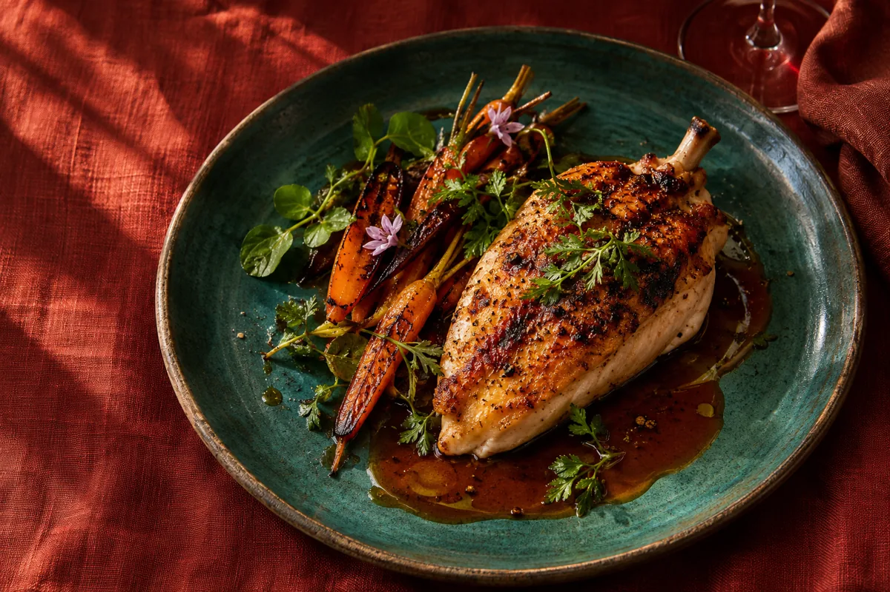

Bistrot de feu · Alès, Gard
La Braise Douce.
Le goût du feu dans l’assiette. Des légumes rôtis, des jus qu’on sauce et une table où l’on prend le temps.

CUISINE À LA BRAISETABLE DE BISTROTALÈS · CÉVENNES
L’esprit de la maison
Le feu vif.
La table tranquille.
La braise donne la note fumée. Le citron, les herbes fraîches et le vinaigre lui répondent. À table, on commence par partager les légumes rôtis, puis chacun choisit son plat.
Une idée de bistrot pour les soirs où le dîner fait toute la soirée.
On s’attarde à table.
Des plats à partager, du pain pour saucer et une dernière bouchée qu’on hésite à laisser.
Infos pratiques
Rendez-vous
à Alès.
La Braise Douce est un concept fictif créé pour montrer le rendu d’un site Nova Web.
- Localisation
- Alès, Gard (30). Pas d’établissement réel.
- Adresse et téléphone
- Non affichés pour cette démo. Sur un vrai site, les coordonnées vérifiées et le bouton Itinéraire figurent ici.
- Réservation
- Aucune demande n’est envoyée.